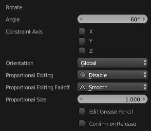
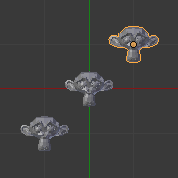

Undo & Redo¶
The tools listed below will let you roll back an accidental action, redo your last action, or let you choose to recover to a specific point, by picking from a list of recent actions recorded by Blender.
Undo¶
Reference
| Mode: | All Modes |
|---|---|
| Panel: | |
| Menu: | |
| Hotkey: | Ctrl-Z |
If you want to undo your last action, just press Ctrl-Z.
Xem thêm
Editing Preferences section on undo to change defaults.
Redo¶
Reference
| Mode: | All Modes |
|---|---|
| Panel: | |
| Menu: | |
| Hotkey: | Shift-Ctrl-Z |
To roll back the Undo action, press Shift-Ctrl-Z.
Redo Last¶
Reference
| Mode: | All Modes |
|---|---|
| Panel: | |
| Hotkey: | F6 |
Redo Last is short for Redo(ing the) Last (Action). F6 after an action will present you a context-sensitive Pop-Up menu based on your last action taken and the Mode and Editor in which Blender is being used.
For example, if your last action was a rotation in Object Mode, Blender will show you the last value changed for the angle (see Fig. Redo Last. left), where you can change your action back completely by typing Numpad0. There are other useful options, based on your action context, and you cannot only Undo actions, but change them completely using the available options.
If you are in Edit Mode, Blender will also change its contents based on your last action taken. In our second example (at the right), the last action taken was a Vertex Move; we did a Scale on a Face, and, as you can see, the contents of the Pop-Up menu are different, because of your mode (Edit Mode) (See Fig. Redo Last. right).

Redo Last -- Rotation (Object Mode, 60 degrees). |

Redo Last -- Scale (Edit Mode, Resize face). |
{kind=link}
Mẹo
Operations using Redo Last
Some operations produce particularly useful results if you tweak their parameters with the F6 Menu. Take, for example, adding a Circle. If you reduce the Vertex count to three, you get a perfect equilateral triangle.
Undo History¶
Reference
| Mode: | All Modes |
|---|---|
| Panel: | |
| Menu: | |
| Hotkey: | Ctrl-Alt-Z |

The Undo History menu.
There is also an Undo History of the last actions taken, recorded by Blender. You can access the history pop-up with Ctrl-Alt-Z.
First positions correspond to most recent actions. A small icon of an eye next to one of the entries indicates the current status. Rolling back actions using the Undo History feature will take you back to the action you choose. Much like how you can alternate between going backward in time with Undo and then forward with Redo, you can hop around on the Undo timeline as much as you want as long as you do not make a new change. Once you do make a new change, the Undo History is truncated at that point. Selecting one of the entries in the list takes the current status to that position.
Repeat Last¶
Reference
| Mode: | All Modes |
|---|---|
| Panel: | |
| Hotkey: | Shift-R |
The Repeat Last feature will repeat your last action when you press Shift-R.
In the example Images below, we duplicated a Monkey mesh, and then we moved the Object a bit. Using repeat Shift-R, the Monkey was also duplicated and moved.

Suzanne. |

After a Shift-D and move. |

After a Shift-R. |
Repeat History¶
Reference
| Mode: | All Modes |
|---|---|
| Panel: | |
| Hotkey: | F3 |

The Repeat History menu.
The Repeat History feature will present you a list of the last repeated actions, and you can choose the actions you want to repeat. It works in the same way as the Undo History, explained above, but the list contains only repeated actions. To access Repeat History, use F3.
Ghi chú
Blender uses two separate Histories, one dedicated for the Edit Mode, and one dedicated for the Object Mode.
Quan trọng
When you quit Blender, the complete list of user actions will be lost, even if you save your file before quitting.
Xem thêm
Troubleshooting section on Recovering your lost work.